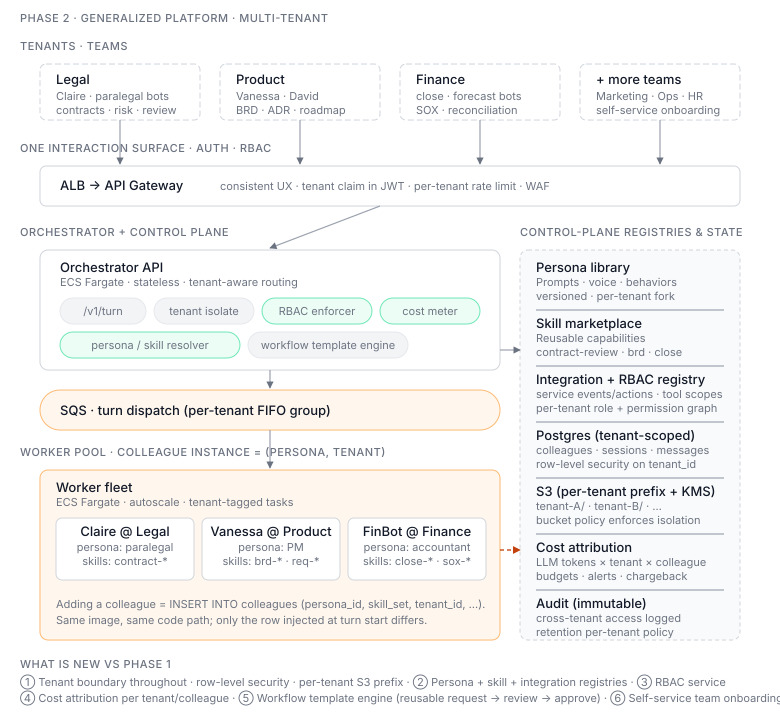

Phase 2 — Generalized Platform
Status: ⏳ Planned. Begins after Phase 1 is in production.
Scope: Take the legal-specific MVP and generalize it into a platform for any business scenario — product, architecture, finance, marketing, support — without shipping new code per scenario.

Goal
By the end of Phase 2, a non-engineering team can onboard their own digital colleagues in a day: pick a persona, pick a skill bundle, configure access, ship. Engineering is only needed to add new primitives (a new skill or integration), not new scenarios.
Phase 1 proves the runtime works for one team. Phase 2 proves the runtime is a platform.
Non-goals (deferred to Phase 3+)
- New service integrations beyond Phase 1's Linear tool
- 1000-agent scale — design for ~100 colleagues across ~10 tenants
- Cross-region / DR
- Long-running stateful colleagues
Architecture (changes vs Phase 1)
The orchestrator + worker pool + SQS + Postgres + S3 backbone keeps its shape. Phase 2 adds abstractions on top, not new infrastructure.
- Tenant boundary. Every row, S3 prefix, and SQS message carries
tenant_id. Workers refuse cross-tenant context loads. Isolation enforced at the data layer. - Persona library. Personas (system prompt + tool allow-list + memory policy)
live as versioned rows in Postgres, not under
agents/<id>/. - Skill bundles. Named, versioned sets of MCP tools + config. A colleague =
persona × skill_bundle × tenant. Adding one is data, not a deploy. - Integration registry. Versioned, permission-scoped service tools. An integration defines inbound events and outbound actions without adding another human-facing conversation surface.
- RBAC service. New control-plane service in front of the orchestrator. Decides who can talk to which colleague, who approves output, who reads audit logs.
- Workflow templates. Patterns like request → review → approve → notify as declarative state machines. Phase 1's contract-review flow becomes one such template, not bespoke code.
- Per-tenant cost meter. LLM calls tagged
tenant + colleague + scenario, rolled up nightly for showback.
Trade-offs
- Row-level tenancy in shared Postgres, not per-tenant DB instances. Rejected
the latter for operational cost and slow onboarding. Accepted risk: a missing
WHERE tenant_id = ?is a P0. Mitigation: tenanted repository layer, raw SQL banned in app code, Postgres RLS as defense-in-depth. - Cross-tenant collaboration as explicit delegation. Tenant B grants tenant A a scoped, time-bound, audited token to invoke specific skills. Rejected: shared "platform" skills with implicit cross-tenant access.
- Memory in three scopes: per-colleague (working), per-team (kanban/docs), per-tenant (org policy). No global cross-tenant memory, ever.
- Self-service onboarding with admin approval gates. Teams add colleagues themselves; tenant admin approves new personas/skill bundles. Platform team only intervenes for new primitives.
Migration from Phase 1
Phase 1 ships with a single implicit tenant (legal).
- Schema migration. Add
tenant_id NOT NULL DEFAULT 'legal'to every relevant table. Backfill, then drop the default. - Lift colleagues into the persona library.
KNOWN_AGENTSbecomes rows inpersonas+colleagues. Prompts move from filesystem to DB. - Group skills into bundles.
doc_*,kanban_*,linear_*MCP tools become named bundles (docs-v1,kanban-v1,linear-v1). Wire format unchanged. - RBAC in shadow mode first. New auth checks run alongside Phase 1's implicit-allow path for one release, log denials without enforcing, then flip.
- Cost meter retrofit. Historical LLM logs backfilled with
tenant_id = legalso reports stay consistent.
The legal team should not notice the migration. If they do, we did it wrong.
Key decisions to capture as ADRs
- ADR-007: Row-level tenancy vs per-tenant database
- ADR-008: Persona + skill bundle as data — schema and versioning
- ADR-009: RBAC model — actors, resources, actions, policies
- ADR-010: Cross-tenant delegation pattern
- ADR-011: Workflow template DSL — declarative vs imperative